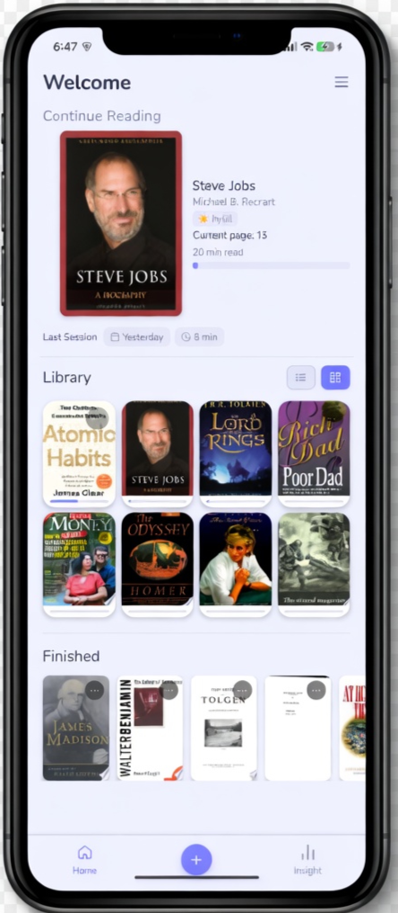
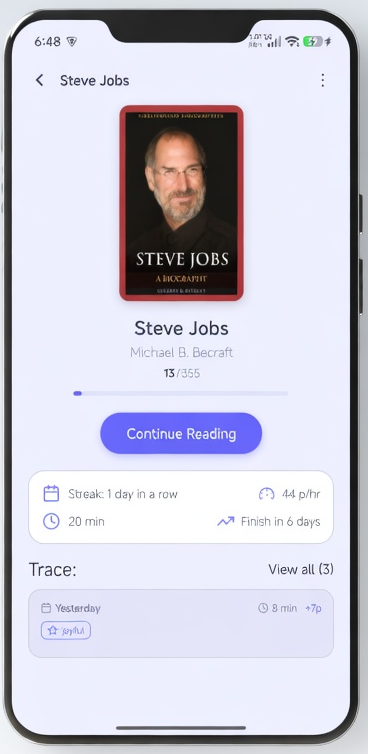
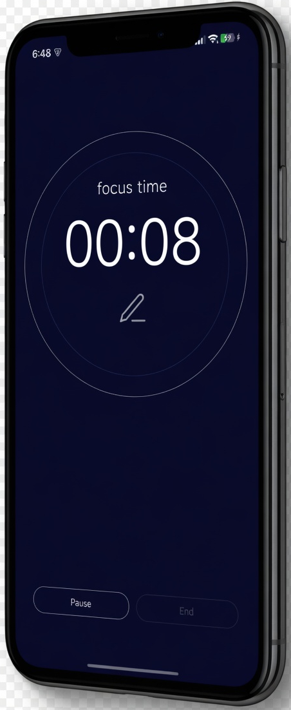
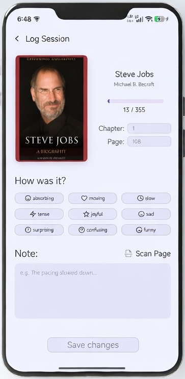
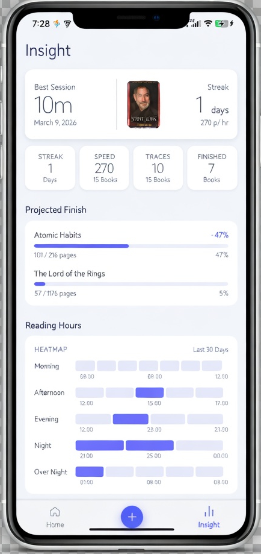

A simple, privacy-first way to reclaim your focus. No ads, no tracking, just utility.
Join the Inner Circle
Modern apps are designed to keep you scrolling, not reading. Your focus is sold to the highest bidder.
It's hard to stay motivated when you can't see how far you've come or when you'll reach the finish line.
Most trackers are cluttered with social feeds and notifications you never asked for.
I'm a designer and a builder, but mostly, I'm a reader. I built this app because I was tired of tools that felt like digital chores or data-hungry corporations. I wanted a space that respected the quiet nature of reading while giving me the insights I needed to stay consistent.
We live in an era of infinite scrolls and 30-second clips. I found myself losing the ability to sit with a book for an hour without checking my phone. I wanted something different: local-first, privacy-focused, and aesthetically calm.

Your library shows every active book with real progress. One tap takes you straight into a session — no friction, no setup.

A distraction-free timer that stays on screen. Set a page goal, go open-ended, or just start reading. Notifications are muted automatically.

After each session, record your page, a note, and how the reading felt. Scan a passage directly from the page. Your sessions build a complete reading record over time.
Streaks, pace, session history, and a projected finish date — all derived from your real reading behaviour, not guesswork.

I'm looking for a small group of early testers to help shape the roadmap.